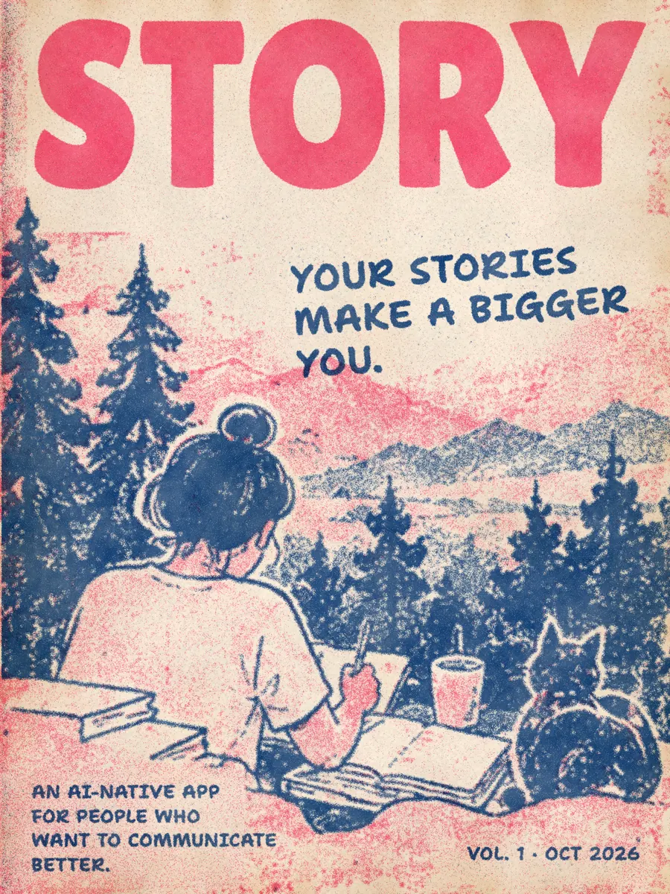

ANALOG UI / EXAMPLE 05
A playful, editorial format to announce a launch with personality.

Flip through pages to exploreSwipe to flip
Click the page to see it at full size. Arrow keys turn pages. Esc closes.